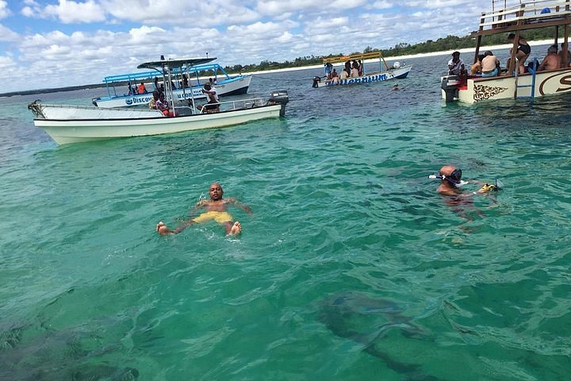
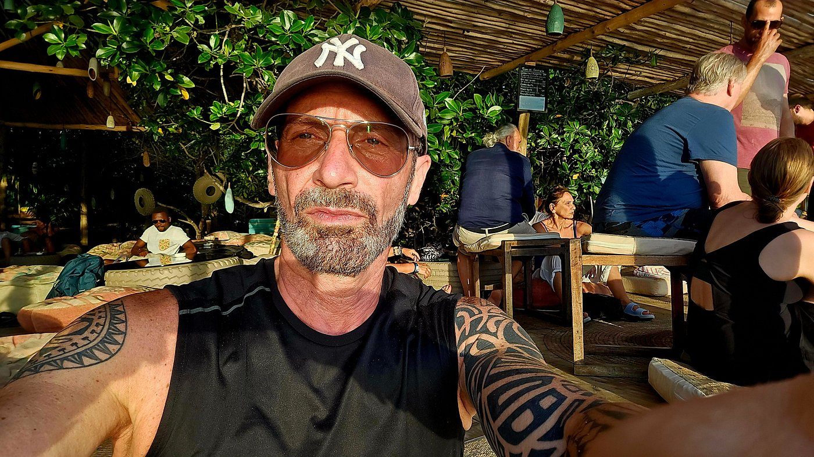

Escursione di giornata intera tra mare, snorkeling e la magia di Mida Creek


🚐 Partenza verso le 08:00 dal vostro alloggio per raggiungere il punto d'imbarco della nostra barca con fondo di vetro, attrezzata con tettuccio panoramico dove sarà possibile rilassarsi e prendere il sole durante la navigazione.
🤿 Prima fermata al Parco Marino di Watamu, una splendida riserva naturale protetta dove potrete fare snorkeling alla scoperta della barriera corallina e dei suoi coloratissimi pesci tropicali. Maschere, pinne e salvagenti possono essere forniti dal nostro staff.
🐬 Durante la navigazione sarà possibile tentare l’avvistamento dei delfini (da novembre a marzo, condizioni del mare permettendo).
🌿 Proseguimento verso la suggestiva laguna di Mida Creek, famosa per le sue mangrovie e per la presenza di numerose specie di uccelli come aironi, cicogne e fenicotteri.
🍽️ Pranzo presso la splendida Sudi Island, dove verranno serviti riso al cocco, sugo di polpo, aragoste, pesce fresco alla griglia, gamberi, frutta tropicale e bevande analcoliche.
🛶 Dopo pranzo potrete rilassarvi sulla spiaggia oppure effettuare un giro in canoa con le guide locali (attività facoltativa non inclusa).
🌅 Rientro al vostro alloggio nel tardo pomeriggio.